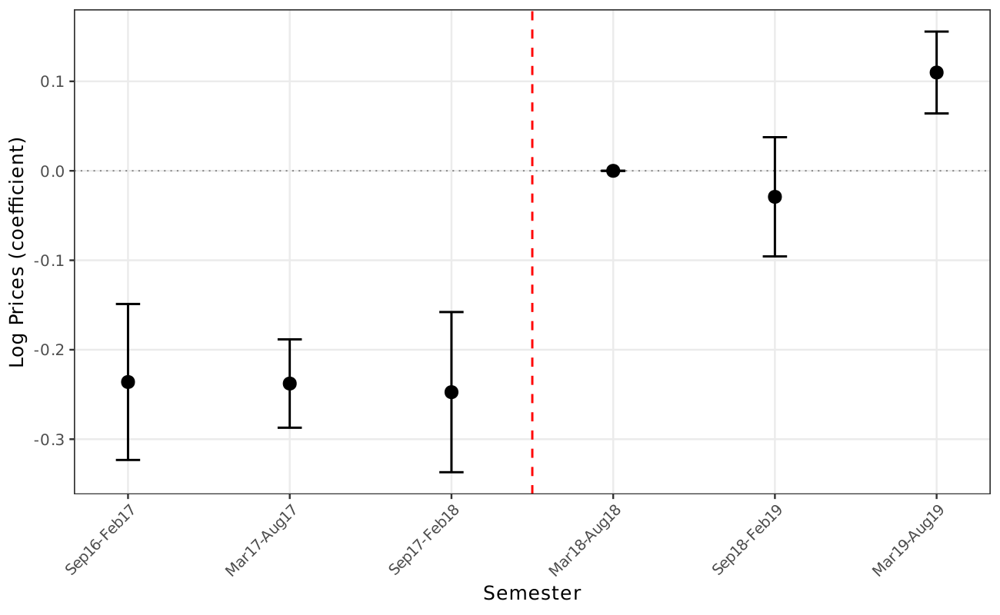
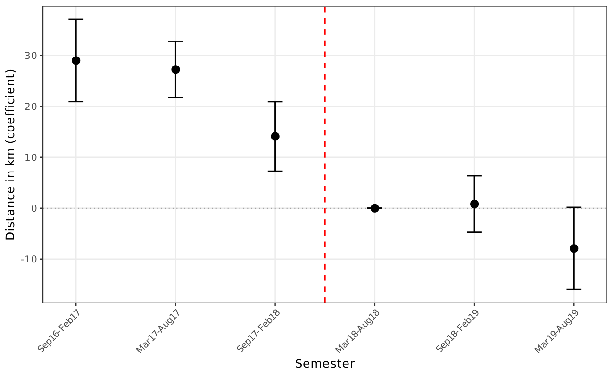
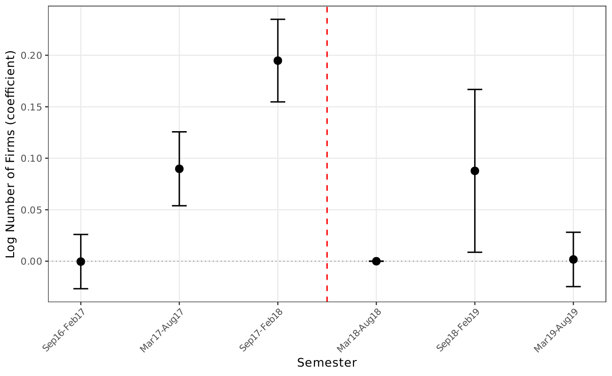
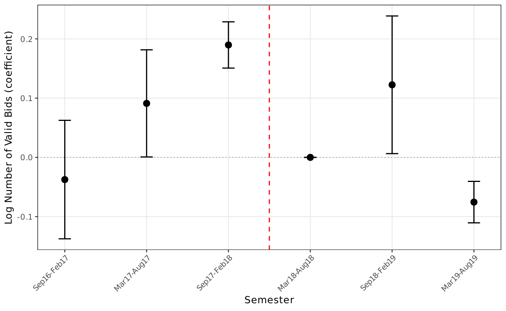
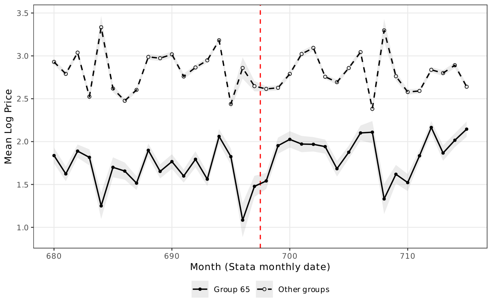
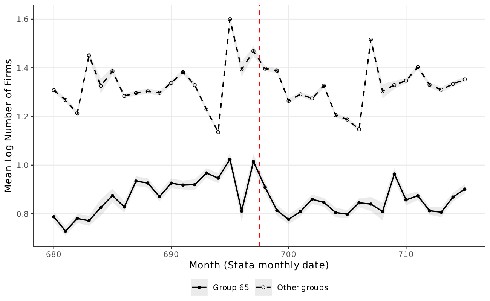
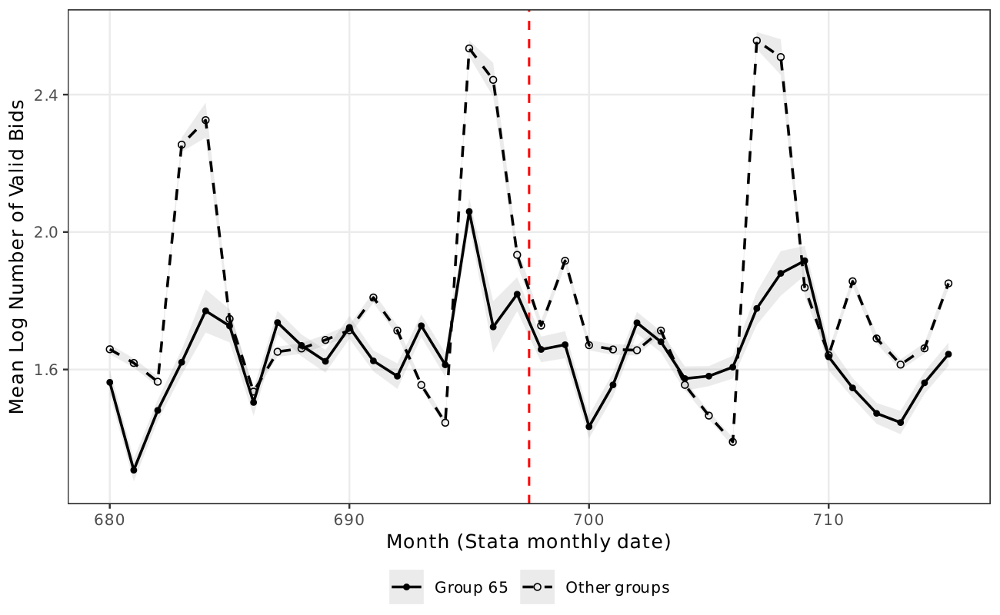
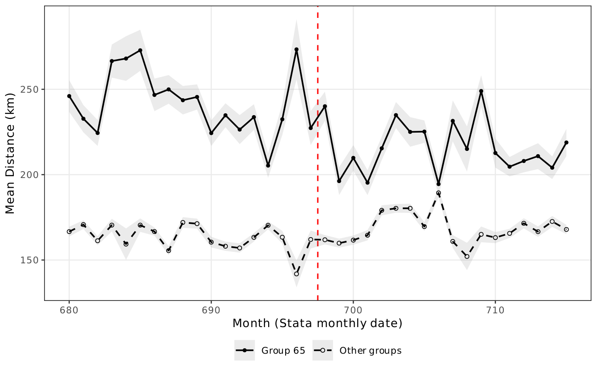
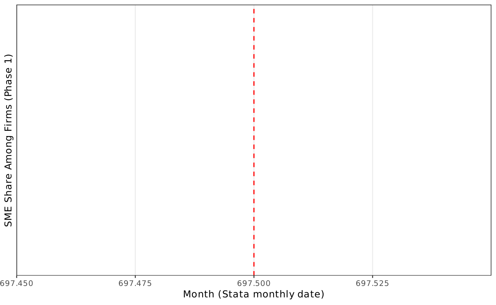

Main Results¶
Event Study: Log Prices¶
The event study plots semester-by-semester differences between group 65 (switched) and other groups (always treated). The parallel trends assumption requires that the difference is stable in the post-period (after March 2018).
{kind=link}

The difference between the two groups narrows dramatically after the policy change and then stabilizes in subsequent periods, supporting the parallel trends assumption.
{kind=link}

{kind=link}

{kind=link}

Descriptive Statistics¶
| Group 65, Pre | Group 65, Post | Others, Pre | Others, Post | |||||
|---|---|---|---|---|---|---|---|---|
| Mean | SD | Mean | SD | Mean | SD | Mean | SD | |
| Price (levels) | 1,402 | 20,564 | 1,508 | 25,872 | 1,466 | 50,386 | 1,291 | 68,043 |
| Log price | 1.72 | 2.84 | 1.91 | 2.81 | 2.85 | 2.12 | 2.78 | 2.07 |
| Number of firms | 3.17 | 2.52 | 3.02 | 2.40 | 4.66 | 3.27 | 4.69 | 3.28 |
| Log firms | 0.88 | 0.73 | 0.84 | 0.71 | 1.30 | 0.72 | 1.30 | 0.72 |
| Number of valid bids | 11.10 | 15.49 | 10.99 | 16.51 | 10.13 | 15.74 | 10.47 | 16.87 |
| Log bids | 1.64 | 1.24 | 1.61 | 1.23 | 1.69 | 1.06 | 1.70 | 1.08 |
| Distance (km) | 238.54 | 270.42 | 215.08 | 239.63 | 164.78 | 182.23 | 170.28 | 186.07 |
| N (completed / all) | 65,606 | 77,206 | 66,822 | 85,181 | 246,277 | 287,500 | 271,011 | 323,836 |
Price and distance computed on completed items. Firm and bid statistics computed on all items.
DiDiR Results: Log Prices¶
| 6-month | 6-month | 12-month | 12-month | 18-month | 18-month | |
|---|---|---|---|---|---|---|
| g65 x Pre | -0.1311*** | -0.1441*** | -0.1370*** | -0.1369*** | -0.1309*** | -0.1330*** |
| (0.0121) | (0.0116) | (0.0107) | (0.0104) | (0.0096) | (0.0094) | |
| Sealed bids | -0.1461*** | -0.2216*** | -0.1430*** | -0.2025*** | -0.1501*** | -0.2048*** |
| (0.0088) | (0.0131) | (0.0079) | (0.0123) | (0.0079) | (0.0116) | |
| Log quantity | -0.2598*** | -0.2972*** | -0.2611*** | -0.2956*** | -0.2597*** | -0.2934*** |
| (0.0082) | (0.0089) | (0.0075) | (0.0080) | (0.0073) | (0.0077) | |
| Observations | 219,535 | 219,535 | 439,054 | 439,054 | 649,714 | 649,714 |
| R-squared | 0.191 | 0.212 | 0.193 | 0.211 | 0.193 | 0.211 |
| Item FE | YES | YES | YES | YES | YES | YES |
| PBU FE | NO | YES | NO | YES | NO | YES |
Standard errors clustered at the item level. *** p<0.01, ** p<0.05, * p<0.1.
Negotiated prices are 4.6--8.1% lower in group 65 open tenders across all specifications and time windows.
DiDiR Results: Number of Participant Firms¶
| 6-month | 6-month | 12-month | 12-month | 18-month | 18-month | |
|---|---|---|---|---|---|---|
| g65 x Pre | 0.1776*** | 0.1821*** | 0.1495*** | 0.1540*** | 0.0926*** | 0.1004*** |
| (0.0079) | (0.0081) | (0.0062) | (0.0063) | (0.0059) | (0.0060) | |
| Observations | 261,450 | 261,450 | 524,745 | 524,745 | 773,263 | 773,263 |
| R-squared | 0.214 | 0.167 | 0.210 | 0.165 | 0.206 | 0.163 |
| Item FE | YES | YES | YES | YES | YES | YES |
| PBU FE | NO | YES | NO | YES | NO | YES |
Standard errors clustered at the item level. *** p<0.01.
Open tenders attract ~22% more firms in the short term, attenuating to ~10% in the 18-month window.
Heterogeneous Effects by Item Value¶
| Log prices | Log firms | Log bids | Distance | |
|---|---|---|---|---|
| Panel A: High-value items (above median) | ||||
| g65 x Pre | -0.1369*** | 0.1075*** | 0.0456*** | 12.0849*** |
| (0.0103) | (0.0072) | (0.0093) | (2.9018) | |
| Observations | 383,949 | 445,903 | 445,903 | 383,949 |
| Panel B: Low-value items (below median) | ||||
| g65 x Pre | -0.0981*** | 0.0592*** | 0.0577*** | 2.8312 |
| (0.0086) | (0.0075) | (0.0110) | (2.2944) | |
| Observations | 265,765 | 327,360 | 327,360 | 265,765 |
18-month window, base specification. Sample split at median reference value.
The price effect is 40% larger for high-value items (-0.137 vs. -0.098). The distance effect is significant only for high-value items (12.1 km).
Fiscal Cost Quantification¶
Translating the estimated price effects into monetary terms provides a concrete measure of the policy's fiscal burden. The calculation applies the implied percentage price effect (\(e^{\hat{\beta}} - 1\)) to the total procurement value of group 65 completed items in the pre-period (Sep 2016--Feb 2018).
| Component | Baseline spec. | PBU FE spec. |
|---|---|---|
| Price coefficient (18m) | -0.1309 | -0.1330 |
| Implied price effect | -12.27% | -12.45% |
| G65 pre-period total value | R$ 689.0 million | R$ 689.0 million |
| Estimated fiscal saving | R$ 84.5 million | R$ 85.8 million |
R$ 84.5--85.8 million Fiscal cost of restricting tenders to SMEs for group 65 in the pre-period (18-month window, ~US$17 million)
This represents about 12% of total procurement value for group 65. The estimate is conservative: group 65 accounts for only 27% of total BEC procurement, so the aggregate fiscal cost across all product groups subject to SME restrictions is likely several times larger. The heterogeneity results further indicate that these costs are disproportionately concentrated among high-value items.
Raw Trends¶
{kind=link}

{kind=link}

{kind=link}

{kind=link}

{kind=link}
